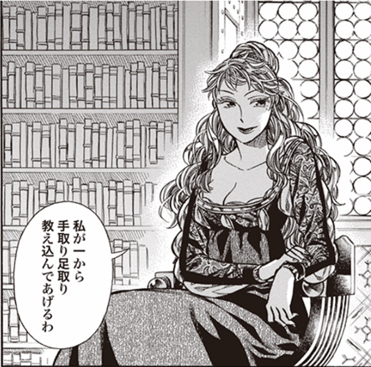

最近買ってる歴史っぽいマンガ
公開日：
『ホークウッド』
")
- 作者: トミイ大塚
- 出版社/メーカー: KADOKAWA / メディアファクトリー
- 発売日: 2013/07/15
- メディア: Kindle版
- この商品を含むブログを見る
これは以前に紹介した。
正直、エドワード黒太子あたりの描写に迫力がないのが残念な感じだけど、それ以外はそこそこ楽しんで読んでる。

早く次の巻が読みたいでござる(＾ω＾)
『アンゴルモア』
 (カドカワコミックス・エース)")
アンゴルモア 元寇合戦記 (1) (カドカワコミックス・エース)
- 作者: たかぎ七彦
- 出版社/メーカー: KADOKAWA/角川書店
- 発売日: 2015/02/07
- メディア: コミック
- この商品を含むブログ (8件) を見る
中世ヨーロッパを席巻し、恐怖の大王=アンゴルモアの語源との説もあるモンゴル軍。1274年、彼らは遂に日本にやって来た! 博多への針路に浮かぶ対馬。流人である鎌倉武士・朽井迅三郎は、ここで元軍と対峙する!
姫がツンデレかわいいので読んでる。一時期、おっぱいあたりに矢が刺さって本気で心配したんだがちゃんと生きていて安心した。
話の内容は『八幡愚童訓』『男衾三郎絵詞』などがベースになっているっぽい。女真族の装束がだいぶ後世ものだったりする考証の甘さはあるみたいだけど、投げ捨てるほどじゃない感じ。
『ゴールデンカムイ』
")
- 作者: 野田サトル
- 出版社/メーカー: 集英社
- 発売日: 2015/01/19
- メディア: コミック
- この商品を含むブログ (24件) を見る
『不死身の杉元』日露戦争での鬼神の如き武功から、そう謳われた兵士は、ある目的の為に大金を欲し、かつてゴールドラッシュに沸いた北海道へ足を踏み入れる。そこにはアイヌが隠した莫大な埋蔵金への手掛かりが!? 立ち塞がる圧倒的な大自然と凶悪な死刑囚。そして、アイヌの少女、エゾ狼との出逢い。『黄金を巡る生存競争』開幕ッ!!!!
明治・大正あたりの北海道の話。歴史っぽいのとはちょっと違うかもしれん。ぶっちゃけ埋蔵金のミステリー話には興味がないが、アイヌの話はとっても面白い。
なんといってもアイヌのごはんが毎回美味しそう。アイヌの人の暮らしも、全然知らなかったな。そういうのが楽しみでついつい買い続けている。
土方歳三とか第七師団方面にはあまり興味が持てないが、そっちが面白い展開になってくれたら☆5つ。
『アルテ』
")
- 作者: 大久保圭
- 出版社/メーカー: 徳間書店
- 発売日: 2014/04/19
- メディア: コミック
- この商品を含むブログ (18件) を見る
16世紀初頭・フィレンツェ。
芸術など文化活動が花開いたルネサンス発祥の地。
そんな活気あふれる華やかなる時代に、貴族家生まれのアルテが画家工房への弟子入りを志願する。
女性がひとりで生きて行くことに理解のなかった時代、様々な困難がアルテを待ち受ける。
少女漫画なのかな？ 第1巻は割とよくある“頑張り屋さんでやたら行動力のあるピュアな女の子が男性本位の社会でもめげずに頑張る”って感じの筋書きで、期待してた画家工房の描写はそんなにない。正直、ちょっとがっかりかなーと思って、2巻からは買うのやめようかなと思っていたんだけど――

ヴェロニカさんの登場で、手のひらを光速で裏返し。
ヴェロニカさんはコルティジャーナ、つまり高級娼婦だね。日本でいえば江戸時代の舞妓に相当するのかなぁ？ コルティジャーナは男顔負けの教養を身に着け、サロンにも出入りしていたという。いつもストレートで、悪く言えば薄っぺらくも感じられるアルテとは違って、いつも素敵な笑顔だけど一筋縄ではいかない娼婦ヴェロニカの登場で、物語にコクが増してきたように思う。ルネサンスならではの話もちょっとずつ出てきて、当分買い続けねばなるまいなといった感じ。
自分は知らなかったんだけど、『娼婦ベロニカ』なんていう映画もあったんだね。
1580年代初頭のベネチアを舞台に、実在の詩人ベロニカ・フランコの華麗な半生を映画化したラブ・ストーリー。1583年、商業都市として栄えたベネチアだが、女性は男性の所有物としてしか扱われていなかった。ベロニカは青年貴族マルコを愛していたが、身分の違いを理由に結婚できなかった。当時のイタリアでは、お金に恵まれない女性に読書や教養人としての道が開かれ、特権階級の男性とも接触でき、大金を手にできる道はコーティザン(高級娼婦）になることしかなかった……。
このあらすじには割と物申したいところもあるんだけど、今度観てみようかと思う。